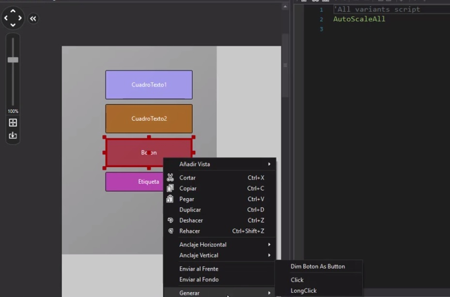

Programacón de eventos
Programacón de eventos
La programación dirigida por eventos es un modelo de programación el cual la ejecución de la aplicación van determinados por los sucesos que ocurran en el sistema, definidos por el usuario o que ellos mismos provoquen.
El usuario determina el flujo de la app, en la programación secuencial (o estructurada) es el programador el que define cual va a ser el flujo del programa, en la programación por eventos sera el propio usuario.
Las acciones del usuario sobre la aplicación se llaman "Eventos"

Por ejemplo: CLICK; LONGCLICK, TEXTCHANGE
Este tema es muy pequeño lo explicare brevemente para no quitar mucho tiempo, Cuando nosotros nos vamos al diseñador de B4a nosotros podemos agregar botones y con ellos podemos agregar formas de interactuar, es decir que si los precionamos hacen cosas, pues lo que sucede con click es eso, solo sucede algo prediseñado por el programador, pero existe otra funcion que es long click esto lo que hace es que debemos dejar precionado el boton para que algo suceda, puede estar al mismo tiempo que el click, es decir que nosotros sepamos que al precionar ese boton sucede algo pero cuando lo dejemos precionado suceda algo mas, algo diferente.
Aqui el como activar estos eventos de manera automatica por el sistema:

una vez seleccionado ya sea click o long click o ambos, estos se pondran automaticamente en el codigo.
Como dije este tema es muy corto
Volver al manual
Visita este sitio para responder tus dudas.